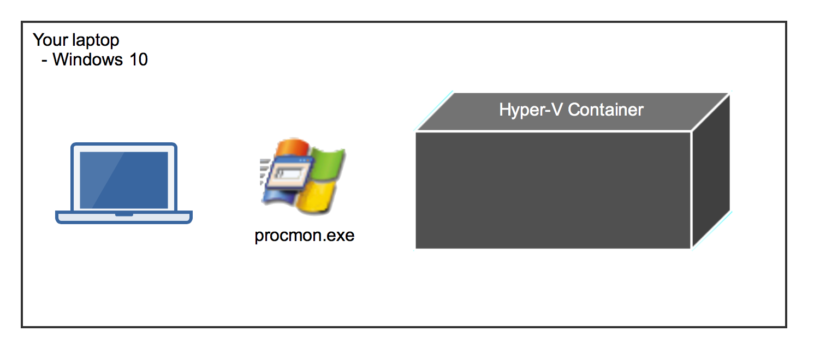
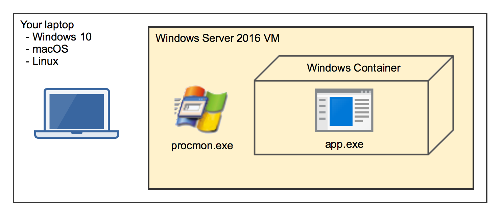
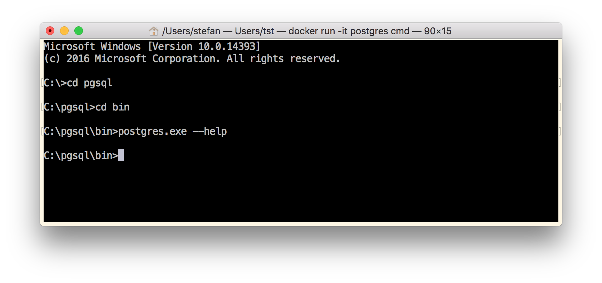
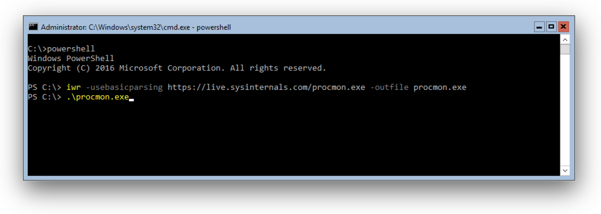
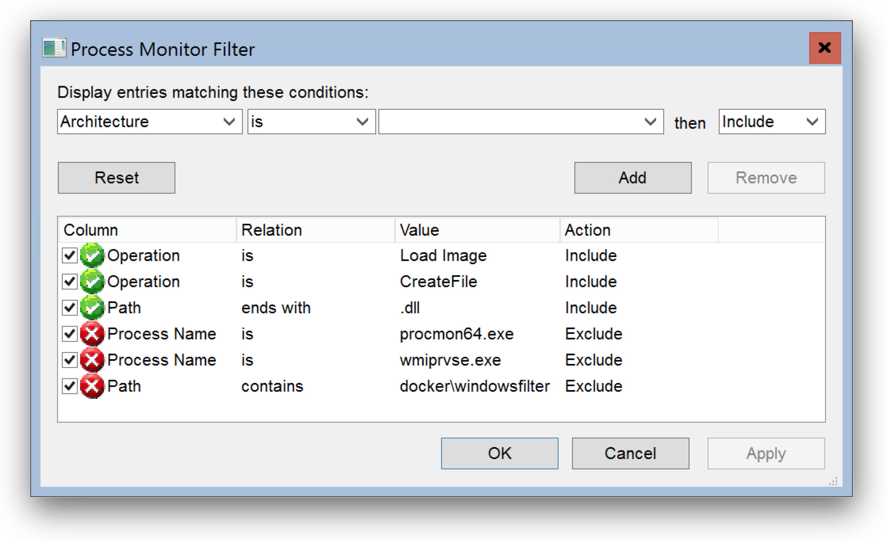
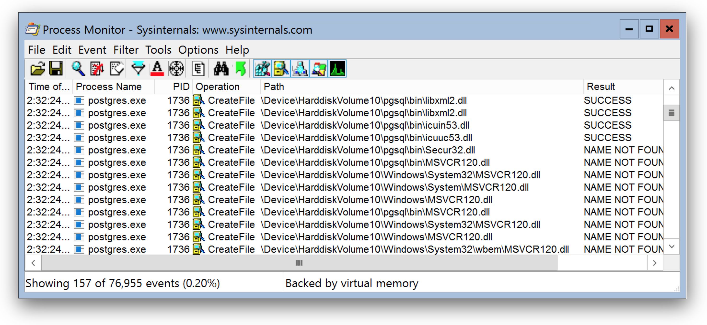
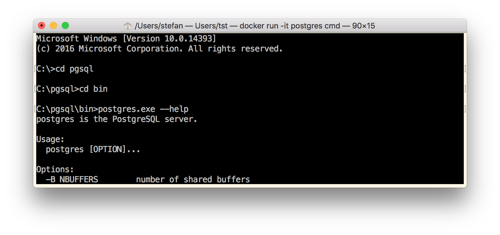
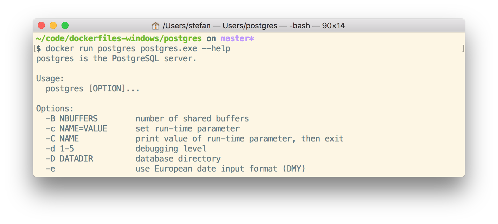

Running applications in Windows containers keeps your server clean. The container image must contain all the dependencies that the application needs to run, for example all its DLL's. But sometimes it's hard to figure out why an application doesn't run in a container. Here's my way to find out what's missing.
Process Monitor
To find out what's going on in a Windows Container I often use the Sysinternals Process Monitor. It can capture all major syscalls in Windows such as file activity, starting processes, registry and networking activity.
But how can we use procmon to monitor inside a Windows container?
Well, I heard today that you can run procmon from command line to start and stop capturing events. I tried running procmon in a Windows container, but it doesn't work correctly at the moment.
So the next possibilty is to run procmon on the container host.
On Windows 10 you only have Hyper-V containers. These are "black boxes" from your host operating system. The Process Monitor cannot look inside Hyper-V containers.

To investigate a Windows container we need the "normal" Windows containers without running in Hyper-V isolation. The best solution I came up with is to run a Windows Server 2016 VM and install Process Monitor inside that VM.
When you run a Windows container you can see the container processes in the Task Manager of the Server 2016 VM. And Process Monitor can also see what these processes are doing. We have made some containers out of "glass" to look inside.

Example: PostgreSQL
Let's try this out and put the PostgreSQL database server into a Windows container.
The following Dockerfile downloads the ZIP file of PostgreSQL 10.2, extracts all files and removes the ZIP file again.
# escape=`
FROM microsoft/windowsservercore:10.0.14393.2007 AS download
SHELL ["powershell", "-Command", "$ErrorActionPreference = 'Stop'; $ProgressPreference = 'SilentlyContinue';"]
ENV PG_VERSION 10.2-1
RUN Invoke-WebRequest $('https://get.enterprisedb.com/postgresql/postgresql-{0}-windows-x64-binaries.zip' -f $env:PG_VERSION) -OutFile 'postgres.zip' -UseBasicParsing ; `
Expand-Archive postgres.zip -DestinationPath C:\ ; `
Remove-Item postgres.zip
Now build and run a first container to try out the postgres.exe inside the container.
docker build -t postgres .
docker run -it postgres cmd
Navigate into C:\pgsql\bin folder and run postgres.exe -h.

As you can see, nothing happens. No output. You just are back to the CMD prompt.
Now it's time to install procmon.exe on the container host and run it.
Open a PowerShell terminal in your Windows Server 2016 VM and run
iwr -usebasicparsing https://live.sysinternals.com/procmon.exe -outfile procmon.exe

Now run procmon.exe and define a filter to see only file activity looking for DLL files and start capturing.

I have a prepared filter available for download: depends.PMF
Go to Filter, then Organize Filters... and then Import...
Now in your container run postgres.exe -h again.
As you can see Process Monitor captures file access to \Device\Harddisk\VolumeXX\psql\bin\ which is a folder in your container.

The interesting part is which DLL's cannot be found here. The MSVCR120.dll is missing, the Visual Studio Runtime DLL's.
For other applications you might have to look for config files or folders that are missing that stops your app from running in a Windows container.
Let's append the missing runtime in the Dockerfile with the next few lines:
RUN Invoke-WebRequest 'http://download.microsoft.com/download/0/5/6/056DCDA9-D667-4E27-8001-8A0C6971D6B1/vcredist_x64.exe' -OutFile vcredist_x64.exe ; `
Start-Process vcredist_x64.exe -ArgumentList '/install', '/passive', '/norestart' -NoNewWindow -Wait ; `
Remove-Item vcredist_x64.exe
Build the image and run another container and see if it works now.

Yes, this time we see the postgres.exe usage, so it seems we have solved all our dependency problems.
Go NanoServer
Now we have a Windows Server Core image with PostgreSQL server. The image size is now 11.1GByte. Let's go one step further and make it a much smaller NanoServer image.
In NanoServer we cannot run MSI packages or vcredist installers, and soon there is also no PowerShell. But with a so called multi-stage build it's easy to COPY deploy the PostgreSQL binaries and dependencies into a fresh NanoServer image.
We append some more lines to our Dockerfile. Most important line is the second FROM line to start a new stage with the smaller NanoServer image.
FROM microsoft/nanoserver:10.0.14393.2007
Then we COPY the pgsql folder from the first stage into the NanoServer image, as well as the important runtime DLL's.
COPY --from=download /pgsql /pgsql
COPY --from=download /windows/system32/msvcp120.dll /pgsql/bin/msvcp120.dll
COPY --from=download /windows/system32/msvcr120.dll /pgsql/bin/msvcr120.dll
Set the PATH variable to have all tools accessible, expose the standard port and define a command.
RUN setx /M PATH "C:\pgsql\bin;%PATH%"
EXPOSE 5432
CMD ["postgres"]
Now build the image again and try it out with
docker run postgres postgres.exe --help

We still see the usage, so the binaries also work fine in NanoServer. The final postgres images is down at 1.64GByte.
If you do this with a NanoServer 1709 or Insider image the sizes is even smaller at 738MByte. You can have a look at the compressed sizes on the Docker Hub at stefanscherer/postgres-windows.
Conclusion
Process Monitor can help you find issues that prevent applications to run properly in Windows containers. Run it from a Server 2016 container host to observe your or a foreign application.
I hope you find this blog post useful and I love to hear your feedback and experience about Windows containers. Just drop a comment below or ping me on Twitter @stefscherer.